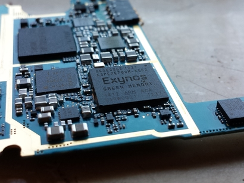
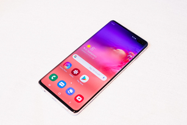

Det finns många olika mobiler och företag som tillverkar dem.
Om vi börjar med vad vi ser utifrån så kan man se att Iphone och
android mobiler har olika laddare, då Iphone har sin egna Iphone
laddningsuttag och alla nya Android mobiler har USB-C. USB-c är en ny
och förbättrad version av Micro-USB som Android mobiler hade innan.
Om vi går vidare så ser vi att de flesta mobiler fortfarande har en AUX port,
men vissa har valt att gå ifrån detta. Anledningen till detta är så mobilen ska vara lättare
vattentät samt spara plats och göra mobilen smalare. AUX porten är till för hörlurar och högtalare
så man kan spela musik på andra maskiner.
Om vi försöker öpnna baksidan av mobilen så kanske det inte går med vissa mobiler.
Detta kan bero på att många nya mobiler gör så att man inte kan öppna skalet på baskidan utan hjälp av verktyg.
Detta hjälper till vattensäkerheten men gör så att vanliga människor har svårare att laga mobiler och på
det sättet måste de betala mer.
När du väl öppnar mobilen kan det variera kraftigt på det mesta förutom vart man lagt kameran. Den ligger alltid på den övredelen av mobilen. Om vi kollar mer på kameran så har dagens nya mobiler upp till 5 kameror på baksidan med en lampa och en kamera på framsidan. Majoriteten håller sig dock till 3 kameror på framsidan då 4 och 5 är mest undantag. Anledningen till att man skall ha mer än en kamera är de extra funktionerna då det inte kamerorna ej är likadana. De finns olika kameror din mobil kan ha men för att ge exempel så används ofta en Vidvinkel kamera för att få en bra bred bild och telefoto kamera för en bra zoom-funktion. Sedan kan en av dina kameror vara en djupsensor som använder infrarött ljus för att mäta djupet på fokuset och bakgrunden och på så sätt kan du lägga till vissa specaileffekter. Ett exempel på en ny mobil med väldigt bra kamera kvalité är Huawei p30 pro som har otroligt snygga och bra funktioner. Den har 4 kameror med egna speciella funktioner. När man pratar om kameror så näms ofta Megapixlar (MP). En pixel är den minsta i biten av en elektronsik skärm, så som en Tv eller mobil. En Megapixel är 1 miljon pixlar, mega=1 miljon. Så man kan säga att desto mer Megapixlar desto bättre kvalité, men detta är bara delivs sant. En 4k skärm har 8 miljoner pixlar och då kommer du bara att behöva 8MP och resten kommer vara onödiga. Det är i ytterst få fall som man behöver mycket mer än det, så bli ej lurad av detta bara för att det låter fint.
Mobilers processorer kallas oftas för chipset och gör, precis som på datorer, alla beräkningar och kontrollerar allting samt kollar så att allt funkar som det ska. När du gör en sak på mobilen, t.ex. öppnar en bild, scrollar på sociala medier eller spelar spel, så går denna handling genom processorn.Efter att processorn har beräknat handlingen så skickar den resultatet vidare. Om det är en bild du har öppnat så skickar processorn informationen till grafikdelen (gpu) som sedan ritar upp bilden på din display. Detta går så snabbt att du knappt märker det. Denna process upprepas varje gång någonting skall utföras. En tumregel för processorns hastighet beror på hur många kärnor den har och vilken klock-frekvens den kommer upp i. Detta är inte allt men det är majoriteten. Varje kärna i en processor kan göra ett arbete samtidigt. På detta viset, om du har flera processorer kan arbetet fördelas mellan kärnorna. Detta gör processen snabbare. Klock-frekvensen är hur många instruktioner processorn kan hantera per sekund och detta mäts i Hertz. Eftesom det blir så många så mäts det nästan alltid i Giga eller Mega Hertz (MHz eller GHz).
SoC (System on a chip) är en av de viktigaste komponenterna, vilket man sätter på moderkortet. Ett modernt SoC inehåller processor, grafikdel, säkerhetskrets, RAM, kamerakrets, och dedikerad ai processor. SoC förväxlas ofta med processorn då det är oftast den de mesta pratar om när man nämner SoC. Men som sagt tidigare så innehåller den mycket mer än bara så. SoC:et som de flesta nya mobiler använder är Snapdragon 855 som kom ut i december 2018. Denna upplaga är väldigt bra då den kom med många nya förbättringar.
Displayen är en väldigt viktig del den med då det är den du tittar 99% av tiden. Men många glömmer att tänka på den när det faktiskt kommer till mobiler. En skillnad som mobilers display kan ha är om det är LED LCD eller OLED. LED(light-emitting diode) är och har varit vanligt ett bra tag nu och finns på flera olika maskiner. LED referar till ljuskällan men när det kommer till display ska man säga LCD (liquid crystal display) för den referar till vilken sorts display. LCD LED display har ett bakgrunds ljus som är pixlarnas ljuskälla. OLED (organic light-emitting diode) har inget bakgrundsljus, utan pixlarna producerar sitt egna ljus. Bildförhållandet på mobilen är också en stor del, för den bestämmer hur stor din mobil kommer vara tillsammans med hur många tum den är (inches). Tum mäter diagonalen på mobilen. En lite mer avlång mobil som Samsung Galaxy s10 har ett bildförhållande på 19:9 och en diagonal längd på 6.1 tum. Plus versionen av denna mobil har samma bildförhållande men är 6.4 tum i diagonalen. Upplösningen eller kvaliten är helt enkelt hur många pixlar du har på skärmen. Desto fler pixlar deso mer upplösning kan du nå. Den stora majoriteten av nya mobiler har iallafall FHD upllösning som också referaras som 1080p. Det är inte 1080 pixlar men det är 1080 pixlar på varje rad (sida till sida), om det är 1080 på en rad så är det standard med 1920 för vaje kolumn (upp till ner). Många nya android mobiler har dock 1440p (QHD) vilket är bättre. Glas eller plast skärm kan också göra stor skillnad då glas är bättre, men dyrare. Samsung är för stunden de som leder marknaden för mobil displayer.
Displayen är den sak som påverkar batteriet mest, då ljus drar som mest på ett batteri. Batteriet är en del som många tycker är viktig då man inte vill ladda den dygnet runt. Batterier kan också vara det som slutar fungera först. Vissa företag låter sina konsumenter byta batterier och lägga dit nya vilket gör det billigare för kunden samt är bättre för miljön, då man ej behöver köpa en ny mobil. Men vissa använder helt för stark tejp eller vilket kan göra det farligt om man försöker byta själv. Detta är inte en bra utveckling framåt utan är enbart ett syfte för att tjäna mer pengar. Batteri kapaciteten mäts i milli ampere timmar(mAh) och en riktig bra storlek just nu är Samsung Galaxy s10+:s 4100mAh.